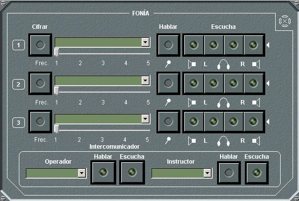

Fonía

El panel de detalle de fonía permite emplear tres redes de fonía simultáneamente, además de las comunicaciones internas de la unidad y el interfono del simulador.
En las unidades submarinas solo se puede escuchar o transmitir por una red de fonía si están en superficie o tienen un mástil o boya de comunicaciones con antena para la banda correspondiente izado.
Redes de Fonía:
El Alumno podrá emplear tres redes de fonía simultáneamente de entre las disponibles en el Plan de Frecuencia del bando de la unidad (hasta 12 redes). Puede ejecutar las siguientes acciones:
Nota: Las redes de fonía que estén seleccionadas para monitorización (ver Control de Unidades – Contramedidas – COMSM) no podrán ser seleccionadas para su escucha.
Comunicaciones internas de la unidad:
El Alumno podrá emplear una red de comunicaciones internas de la unidad propia. Puede ejecutar las siguientes acciones:
Interfono del simulador:
El Alumno podrá emplear una red de interfono del simulador para comunicar con los instructores. Puede ejecutar las siguientes acciones:
Los canales de audio (L, R o Altavoces) asignados a cada red se indican con el led correspondiente en color verde. La red seleccionada para hablar también se muestra con el led correspondiente en verde.
El led de transmisión de la red seleccionada para hablar parpadea en color amarillo mientras el operador esté hablando por dicha red. El led de escucha asociado a cada red parpadea en amarillo mientras haya comunicación en dicha red, permaneciendo de color amarillo sin parpadear el correspondiente a la última red en la que ha habido comunicación.